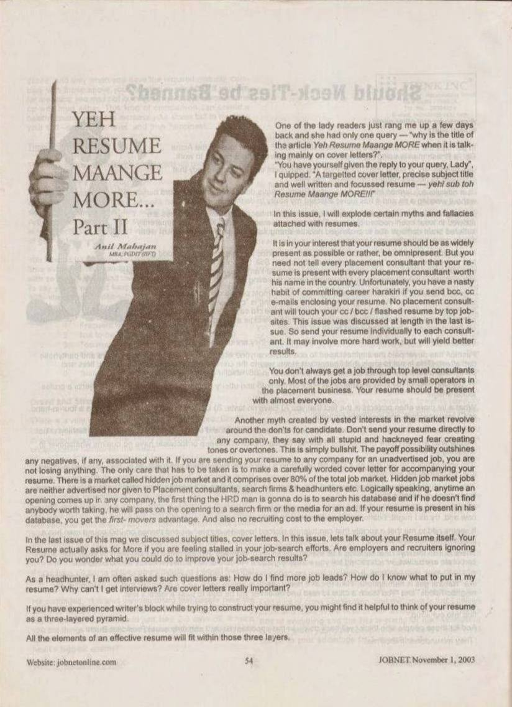
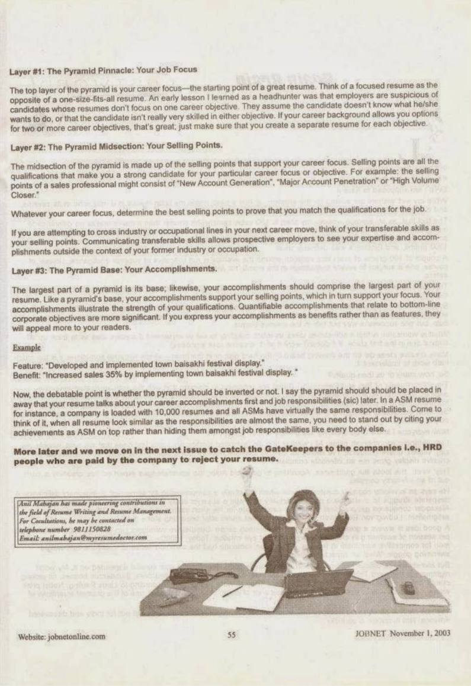

JOBNET Career Intelligence
Building a Resume That Creates Opportunity
About This Article
Continuing the resume transformation series, Anil Mahajane explored the deeper elements that distinguish an ordinary resume from one that commands attention.
The article emphasised that an effective resume is not simply about presenting qualifications or listing responsibilities — it is about demonstrating professional credibility, career progression and the value an individual brings to an organisation.
More than twenty years later, these principles have become even more significant as executive hiring increasingly focuses on leadership capability, business impact and long-term organisational fit.
Original Publication
Scanned pages from the original printed publication.

JOBNET November 2003 — Page 1

JOBNET November 2003 — Page 2
Article Transcript
Originally published in JOBNET — November 2003
One of the lady readers just rang me up a few days back and she had only one query — "why is the title of the article Yeh Resume Maange MORE when it is talking mainly on cover letters?"
"You have yourself given the reply to your query, Lady", I quipped. "A targeted cover letter, precise subject title and well written and focussed resume — yehi sub toh Resume Maange MORE!"
In this issue, I will explode certain myths and fallacies attached with resumes.
Distribution
It is in your interest that your resume should be as widely present as possible — omnipresent. But you need not tell every placement consultant that your resume is present with every placement consultant worth his name in the country. Send your resume individually to each consultant. It may involve more hard work, but will yield better results.
You don't always get a job through top level consultants only. Most of the jobs are provided by small operators in the placement business. Your resume should be present with almost everyone.
Another myth: "Don't send your resume directly to any company." This is simply bullshit. The payoff possibility outshines any negatives. If you are sending your resume to a company for an unadvertised job, you are not losing anything — just ensure you accompany it with a carefully worded cover letter.
Hidden job market jobs are neither advertised nor given to placement consultants, search firms or headhunters. Logically speaking, anytime an opening comes up in any company, the first thing the HRD manager is going to do is search his database. If your resume is present in his database, you get the first-mover's advantage — and the employer saves on recruiting costs.
Framework
If you have experienced writer's block while trying to construct your resume, you might find it helpful to think of your resume as a three-layered pyramid. All the elements of an effective resume will fit within those three layers.
Layer 1 — Pinnacle
Your Job Focus
The top layer is your career focus — the starting point of a great resume. Think of a focused resume as the opposite of a one-size-fits-all resume. Employers are suspicious of candidates whose resumes don't focus on one career objective. If your career background allows two or more objectives, create a separate resume for each.
Layer 2 — Midsection
Your Selling Points
The midsection is made up of the selling points that support your career focus — all the qualifications that make you a strong candidate. For a sales professional, these might be "New Account Generation", "Major Account Penetration" or "High Volume Closer." If transitioning industries, your transferable skills are your selling points.
Layer 3 — Base
Your Accomplishments
The largest part of a pyramid is its base; likewise, your accomplishments should comprise the largest part of your resume. Your accomplishments support your selling points, which in turn support your focus. Quantifiable accomplishments that relate to bottom-line corporate objectives are more significant. Express them as benefits rather than features.
Key Concept
If you express your accomplishments as benefits rather than as features, they will appeal more to your readers. Here is a direct comparison:
Feature (weak)
"Developed and implemented town baisakhi festival display."
Benefit (strong)
"Increased sales 35% by implementing town baisakhi festival display."
Now, the debatable point is whether the pyramid should be inverted or not. I say your resume should talk about your career accomplishments first and job responsibilities later. When a company is loaded with 10,000 resumes and all ASMs have virtually the same responsibilities, you need to stand out by citing your achievements on top rather than hiding them amongst job responsibilities like everybody else.
More later — in the next issue we catch the GateKeepers to the companies i.e., HRD people who are paid by the company to reject your resume.
Then & Now
The expectations of employers have changed dramatically since this article first appeared. Today's resumes are expected to answer much more than where someone has worked. They must demonstrate how a professional has contributed to business growth, solved complex challenges and delivered measurable results.
A modern executive resume should clearly communicate:
In today's competitive marketplace, every section of a resume should strengthen the candidate's professional narrative.
How the Concept Has Evolved
Then — 2003
Today — 2026
Key Takeaways
Practical Advice
The strongest resumes today combine clarity, credibility and measurable business contribution.
Looking Ahead
As organisations continue to embrace digital recruitment, data-driven hiring and leadership assessment, resumes will remain one of the most important professional documents.
That insight was at the heart of Yeh Resume Maange More – Part II in 2003 and continues to guide successful executive careers today.
About the Author
Anil Mahajane
MBA (IIFT) · Founder & Director, C-Suite Talent Management Consulting
30+ years of executive search and leadership advisory across India and the Middle East — spanning GCCs, Defence & Aerospace, Healthcare, Consumer Electronics, Steel, Cement and Infrastructure.
Continue Reading